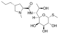

lincomycin

Definition: Lincomycin is a lincosamide antibiotic that comes from the actinomycete Streptomyces lincolnensis. A related compound, clindamycin, is derived from lincomycin by using thionyl chloride to replace the 7-hydroxy group with a chlorine atom with inversion of chirality. It was released for medical use in September 1964.
Source: Wikipedia
Wikipedia Page
Wikidata Page